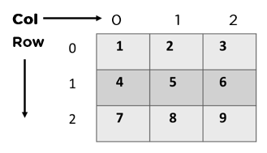
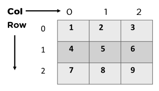
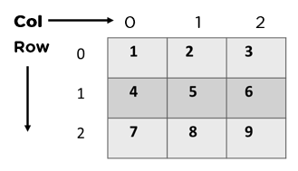

=============================== 数组/矩阵/稀疏矩阵 ===============================
array
英 [əˈreɪ] 美 [əˈreɪ]
n.
大堆;大群;大量;数组;阵列
vt.
布置;排列;配置(兵力)
matrix
英 [ˈmeɪtrɪks] 美 [ˈmeɪtrɪks]
n.
矩阵;(人或社会成长发展的)社会环境，政治局势;线路网;道路网;基体;矩阵转接电路;杂基
学习数据结构时，从3个方面进行：
1 逻辑结构
2 功能(运算)
3 物理结构
数组的逻辑结构 和物理结构

基本操作
traverse。 print all the array elements one by one.
insertion。 Adds an element at the given index.
delete。 Deletes an element at the given index.
search。Searches an element using the given index.
update。 Updates an element at the given index.
transpose。矩阵转置
矩阵乘积(),哈达马积（Hadamard product）、克罗内克积（Kronecker Product）
{kind=link}
{kind=link}
数组的类型
1 一维数组:
 2 二维数组:

3 三维数组:
2 二维数组:

3 三维数组:
 一维二维三维数组：
一维二维三维数组：
2 二维数组:

3 三维数组:
一维二维三维数组：
 3 对角矩阵
3 对角矩阵
矩阵的压缩存储：相同的数据存储只保存一份，可以从存储的数据还原成原来的矩阵即可。
1 对称、三角、对角矩阵的压缩
2 稀疏矩阵的压缩。
稀疏矩阵：矩阵中的非零元素远远小于零元素的个数，并且非零元素的分布没有规律。
計算有限元問題時得到的稀疏矩陣。非零元素用黑點表示。
稀疏矩阵的压缩方式：
1 三元组/三元组顺序表。三元组使用 行号、列号、值 这三个信息来保存非零元素。
2 十字链表。非零元素的位置或个数经常发生变化时，不宜采用三元组顺序表存储，而应该采用链表存储，十字链表使用一个节点来表示一个非零元素。
矩阵的乘法(叉乘, C行列=sum(A行xB列))：
一维数组的基本操作：
traverse、insertion、delete、search、update
重写：toString、equals
import java.util.Arrays;
/**
* 一维数组
* @param 数组中数据的类型，泛型。
*/
public class OneDimensionalArray {
private T arr[];
/**
* 构造一维数组
* @param arr Java可变参数， T... arr相当于 T[] arr。但是传参时更方便
*/
public OneDimensionalArray(T... arr) {
this.arr = arr;
}
/**
* 重写tostring
* @return
*/
@Override
public String toString() {
return "OneDimensionalArray{" +
"arr=" + Arrays.toString(arr) +
'}';
}
}
作业：
1 打印一维数组。
写完代码后，用下面的数组检验一下：
arr={1,2,3,4,5};
2 编写Java代码完成矩阵的转置。
写完代码后，用下面的矩阵检验一下：
代码运行结果：
[1,2,3,4,5]
1 2 3
arr= 4 5 6
7 8 9
10 11 12
3 编写Java代码，求两个矩阵的乘积：
写完代码后，用下面的矩阵检验一下：
代码运行结果：
A1 A2 A3 A4
1 1 4 7 10
2 2 5 8 11
3 3 6 9 12
1 2 3 13 14 15 16
arr1= 4 5 6 arr2 = 17 18 19 20
7 8 9 21 22 23 24
10 11 12
代码运行结果：
C1 C2 C3 C4
1 110 116 122 128
2 263 278 293 308
3 416 440 464 488
4 569 602 635 668